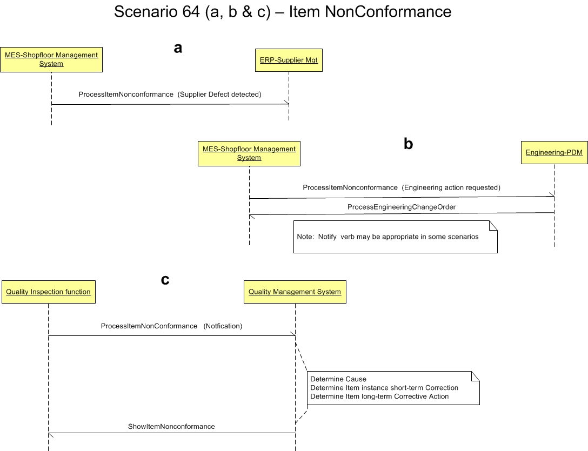

Scenario 64 - Item NonConformance64.0 OverviewScenario #64 describes several integration scenarios for reporting item or product non-conformance (failure to meet some specified values or criteria).The purpose of this scenario is to enable the visualization of the participants in the process and the dialogs between them for this specific integration. This scenario is not meant to be the only model for integrating general ledger applications to a budget applications. This is simply one model that may be used to guide one's own integration efforts. Many applications create data that report Item Conformance. Some of these components include:
64.1 ScenarioThe scenario below contains the participants involved in the interaction, the dialog flows or conversation between them, certain assumptions about the sequence of events, and assumptions about the technical approach, for example, publish and subscribe.These models are to be used as a design recommendations, not as required approaches.  64.2 AssumptionsThis scenario assumes a loosely coupled, asynchronous approach with transaction management required but not explicitly defined.It also presumes that this scenario can be applied as a B2B interaction between enterprises, as an internal A2A exchange within an enterprise or as an B2M exchange from a business to a mobile device following the same canonical business messaging model. This scenario describes a model where several software components report Item Conformance Typically used with Process, Notify or Show verb. The determination of which verb is appropriate depends on the specific use case and the roles of the systems as related to which is the authoritative system of record (Master) for the aspect of the Item Non-conformance being communicated. The ItemNonConformance noun can be used to report events related to Items or Item Instances that do not fulfill specifications or requirements, either due to discovered exceptions from product characteristics or due to damage. The ItemNonConformance noun provides the ability for the sender to report an identified non-conformance at the level of detail that is required. It also provides the ability to report the specific non-conformances of a component/ part while also identifying the parent assembly or another part as the affected item. The ItemNonConformance noun may be used to report, initiate, or request actions related to the non-conformance being reported, including identifying relevant parties and responsibilities, identifying proximate and root causes, and identifying immediate disposition (correction) action for the Item Instance as well as long term corrective action for the Item definition. Financial, Order, or accounting information may be provided for reference purposes as ReferenceDocument elements. This noun addresses a subset of the uses cases of EDI 842 NonConformance Report, and some of the workflows required by ISO9001 compliant processes. Typical uses would be from a MES or Shopfloor Management system, to report Item instance non-conformance to a supplier management system or to internal inventory or quality management system, identifying not only the specific Item instance that has the non-conformance, but also the affected item, such as the containing assembly, which is now also unsuitable for use until the component instance non-conformance is corrected. The Item Nonconformance may also be used from a shopfloor management system or inspection facility to report general Item non-conformance issues to an Engineering system, for eventual corrective action as an engineering change. 64.3 Participant DefinitionsThis scenario contains multiple participants or roles:
Each application must be able perform the services defined by the message BOD (business object document), but the internals of the application are not required or desired to be exposed at this level of standardized abstraction. The most important factors in defining these participants is to ensure that an integration designer can communicate the requirements precisely enough to detail the interfaces needed and their interrelationships. 64.4 Business Workflow (Sequence)The business workflow is graphically represented by starting at the Scenario top and reading from top down and from left to right.64.5 Exception HandlingException handling is highly localized as the result of an implementation's infrastructure, management and business rules. As such, this section of the Scenario documentation is planned to be used as a guide to help understand the additional intent of these Scenarios. If no exceptions are noted here, then it can be assumed that the Scenario designers agreed that the Scenario is straight forward and has no additional needs:
Copyright OAGi 2016 - All Rights Reserved -- OAGIS release 10.3 - Document Number: 20160901-64 |